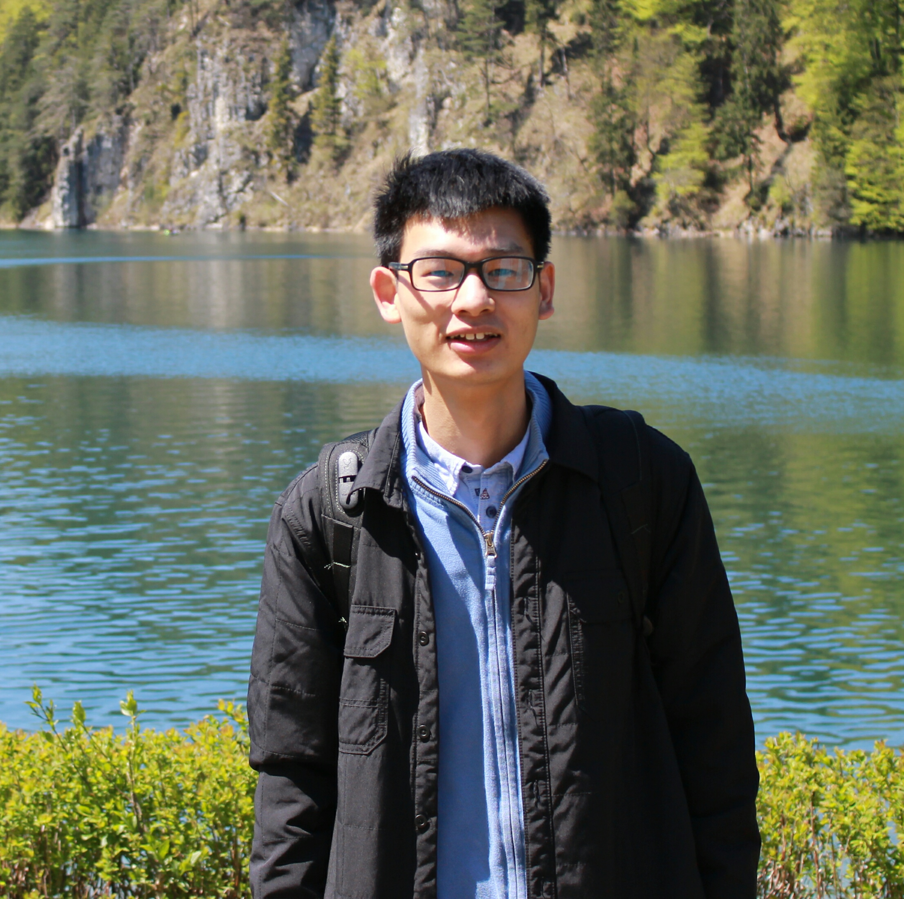

Time: 8:30 am - 12:30: am, Friday, February 7, 2020
Location: Sutton South
Graph structured data such as social networks and molecular graphs are ubiquitous in the real world. It is of great research importance to design advanced algorithms for representation learning on graph structured data so that downstream tasks can be facilitated. Graph Neural Networks (GNNs), which generalize the deep neural network models to graph structured data, pave a new way to effectively learn representations for graph-structured data either from the node level or the graph level. Thanks to their strong representation learning capability, GNNs have gained practical significance in various applications ranging from recommendation, natural language processing to healthcare. It has become a hot research topic and attracted increasing attention from the machine learning and data mining community recently. This tutorial of GNNs is timely for AAAI 2020 and covers relevant and interesting topics, including representation learning on graph structured data using GNNs, the robustness of GNNs, the scalability of GNNs and applications based on GNNs.
Introduction
Graphs and Graph Structured Data
Tasks on Graph Structured Data
Graph neural networks
Foundations
Basic Graph Theory
Graph Fourier Transform
Models
Spectral-based GNN layers
Spatial-based GNN layers
Pooling Schemes for Graph-level Representation Learning
Graph Neural Networks Based Encoder-Decoder models
Scalable Learning for Graph Neural Networks
Attacks and Robustness of Graph Neural Networks
Applications
Natural Language Processing
Recommendation
Healthcare
|  | Yao Ma is a Ph.D. student of Computer Science and Engineering at Michigan State University. He also works as a research assistant at the Data Science and Engineering lab (DSE lab) led by Dr. Jiliang Tang. His research interests include network embedding and graph neural networks for representation learning on graph-structured data. He has published innovative works in top-tier conferences such as WSDM, ASONAM, ICDM, SDM, WWW, KDD and IJCAI. Before joining Michigan State University, he obtained his master’s degree from Eindhoven University of Technology and bachelor’s degree from Zhejiang University. |
Wei Jin is a first-year Ph.D. student of Computer Science and Engineering at Michigan State University (MSU), supervised by Dr. Jiliang Tang. His interests lie in Graph Representation Learning. Now I work on the area of graph neural network including its theory foundations, model robustness and applications. |
Jiliang Tang is an assistant professor in the computer science and engineering department at Michigan State University since Fall@2016. Before that, he was a research scientist in Yahoo Research and got his PhD from Arizona State University in 2015. His research interests including social computing, data mining and machine learning and their applications in education. He was the recipients of 2019 NSF Career Award, the 2015 KDD Best Dissertation runner up and 6 best paper awards (or runner-ups) including WSDM2018 and KDD2016. He serves as conference organizers (e.g., KDD, WSDM and SDM) and journal editors (e.g., TKDD). He has published his research in highly ranked journals and top conference proceedings, which received thousands of citations and extensive media coverage. |
Lingfei Wu is a Research Staff Member in the IBM AI Foundations Labs, Reasoning group at IBM T. J. Watson Research Center. He earned his Ph.D. degree in computer science from College of William and Mary in August 2016, under the supervision of Prof. Andreas Stathopoulos. He is a research team leader (consisting of 10+ research staff members) for several research projects (we named AI Challenges inside IBM Research), including Deep Learning on Graphs for AI. He has served as the PI in IBM for several federal agencies such as DARPA and NSF (more than $1.8M). He is also an IBM Co-PI of the MIT-IBM Watson AI Lab Award (2018 and 2019) for projects themed “Intelligent Multi-Scale Design of De Novo Proteins to Enhance Food Security”. His research interests lie at the intersection of Machine Learning(Deep Learning), Representation Learning, and Natural Language Processing, with a particular emphasis on the fast-growing subjects of Graph Neural Networks and its extensions on new application domains. Lingfei has published more than 50 top-ranked conference and journal papers, including but not limited to NIPS, ICML, ICLR, AISTATS, KDD, ICDM, NAACL, EMNLP, IJCAI, AAAI, and SIAM Journal on Scientific Computing. He is also a co-inventor of more than 20 filed US patents. He was the recipients of the Best Paper Award in IEEE ICC’19 and KDD workshop on DLG’19, and the Best Student Paper Award in AIAED’19 and KDD workshop on DLG’19. Lingfei's research has been featured in numerous media outlets, including NatureNews, YahooNews, Venturebeat, TechTalks, SyncedReview, Leiphone, QbitAI, MIT News, IBM Research News, and SIAM News. |
Tengfei Ma is currently a research staff member in IBM T. J. Watson Research Center, New York, USA. He joined IBM Research in 2015 and worked in Tokyo Lab for one year and a half. Prior to IBM, he obtained his PhD degree from the Graduate School of Information Science and Technology, the University of Tokyo, Japan, under the supervision of Prof. Hiroshi Nakagawa. He received his M.S. from Peking University and his B.E. from Tsinghua University, China. His research interests have spanned a number of different topics in machine learning and natural language processing (NLP) during his study and career, including document summarization, bilingual text mining, Bayesian nonparametrics, deep learning for education and healthcare. Currently his research is mainly focused on graph neural networks, and he is also interested in other deep learning techniques in healthcare and NLP areas. |
{kind=link}
{kind=link}
{kind=link}
{kind=link}
{kind=link}